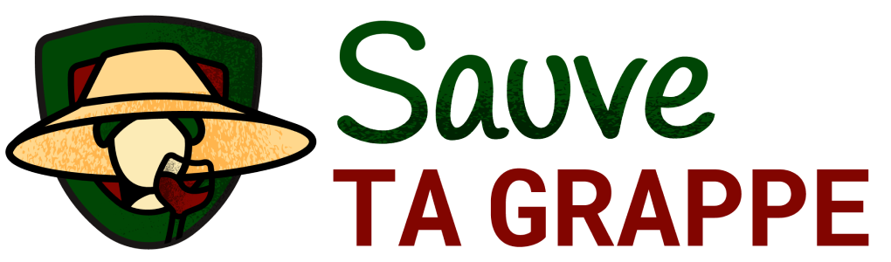
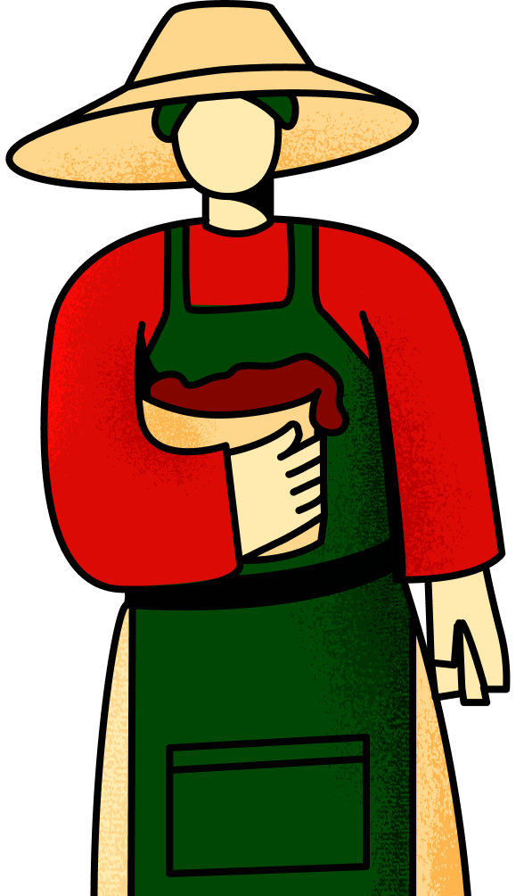
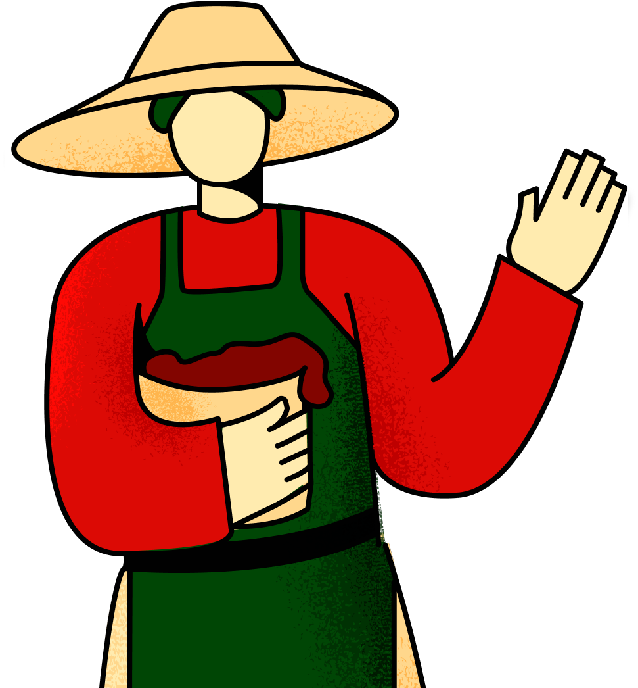
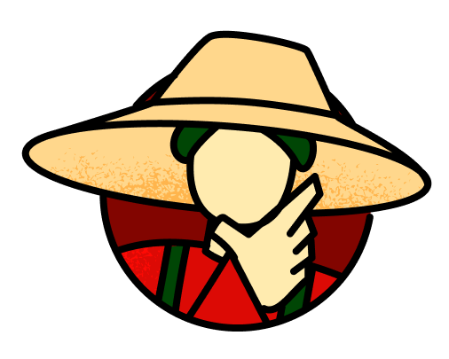
Le choix va être difficile !
Je te laisse choisir.
Je te laisse choisir.
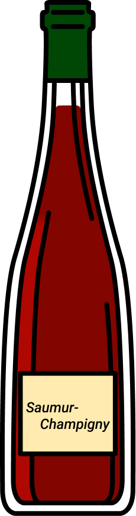
i
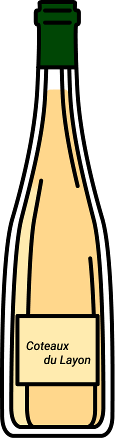
i
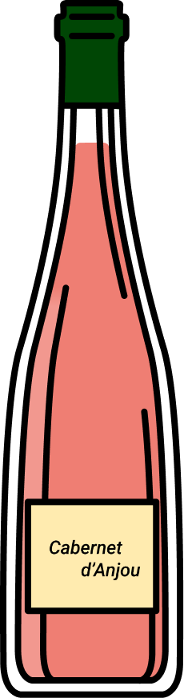
i
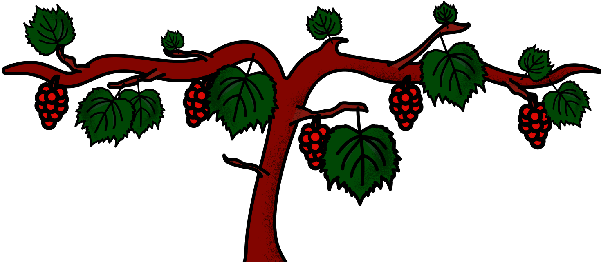
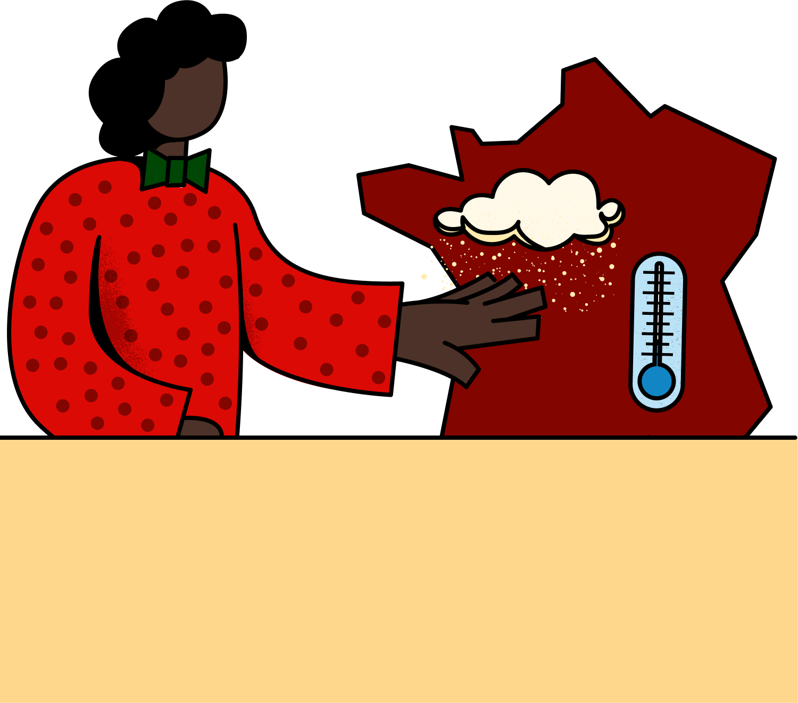

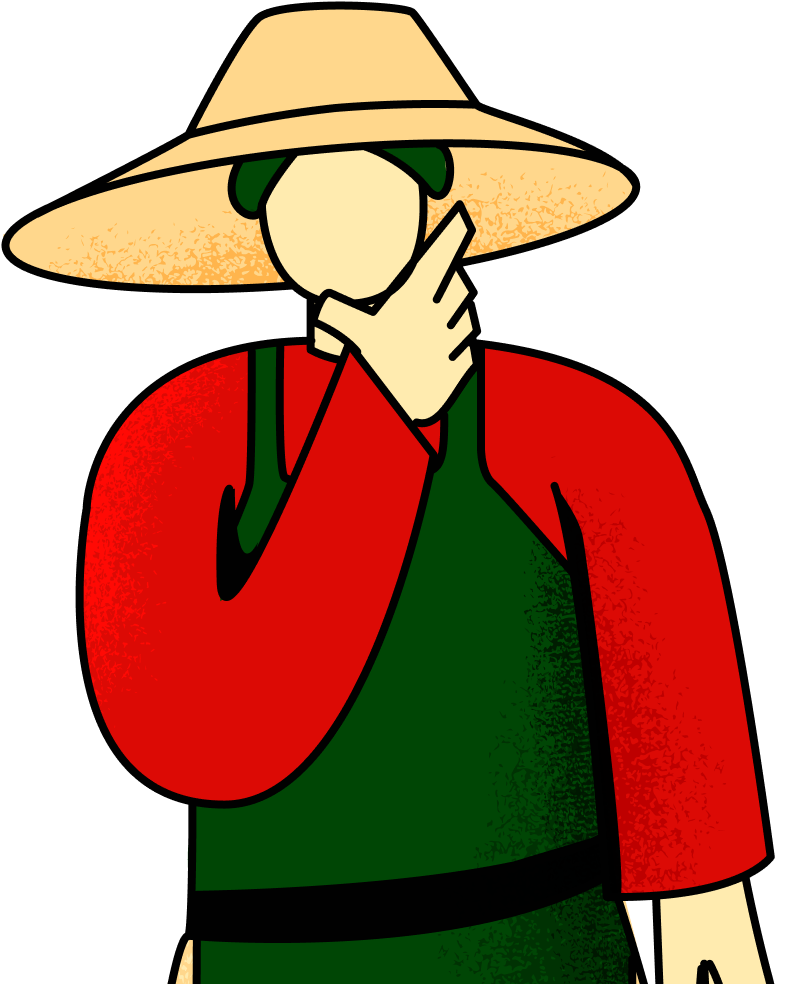
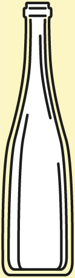
Quel est le résultat de ma récolte ?
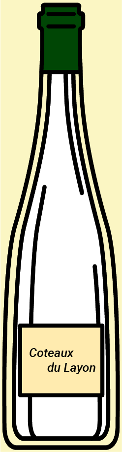
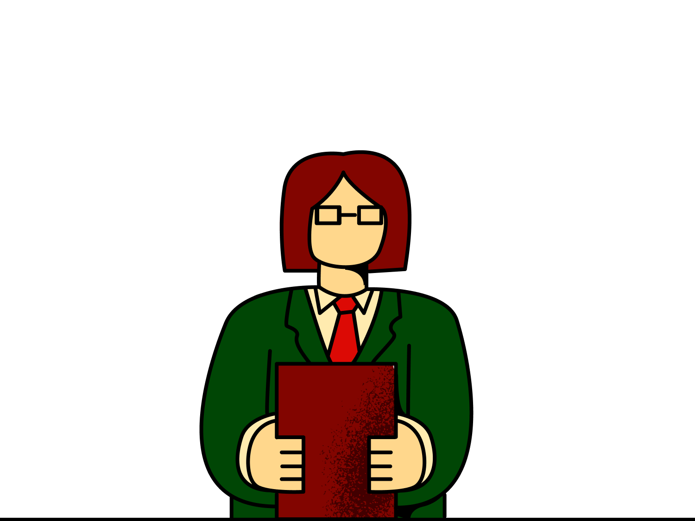
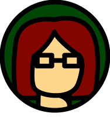
Pour finir et rendre l’antenne, voici toutes les sources qui nous ont permis de réaliser ce JT:
- Plan national dépérissement du vignoble
- Gel tardif : un risque de plus en plus probable à cause du réchauffement climatique
(Natura Sciences)
- Étude : Le changement climatique causé par l'homme a augmenté la probabilité de gel de la période de croissance précoce en France
- “Une partie de la vigne française est menacée” (L’Union)
Merci et à très bientôt !
CREDITS:
- AGR
- - Bérénice LEGROS
- - Lea COUTURIER
- - Wiliam CARDOSO
- EPJT
- - Tom DEMARS-GRANJA
- Polytech Nantes
- - Paul BODIN
- - Lucas CHATTELEYN
- - Alexander SAUVIGNET
- - Léopold VARLET
- REMERCIEMENTS
- - Guénolé SEILER / France 3